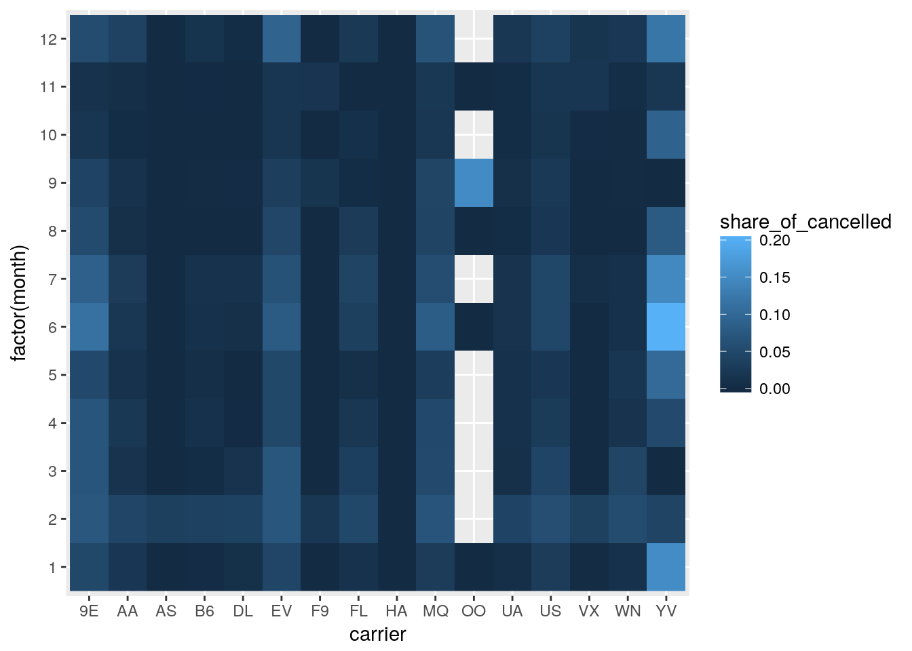

flights %>%
group_by(origin, dest, carrier) %>%
summarize(n_flights = n()) %>%
summarize(n_distinct_carriers = n()) %>%
ungroup() %>%
arrange(desc(n_distinct_carriers))## # A tibble: 224 x 3
## origin dest n_distinct_carriers
## <chr> <chr> <int>
## 1 EWR DTW 5
## 2 EWR MSP 5
## 3 JFK LAX 5
## 4 JFK SFO 5
## 5 JFK TPA 5
## 6 LGA ATL 5
## 7 LGA CLE 5
## 8 LGA CLT 5
## 9 EWR ATL 4
## 10 JFK AUS 4
## # ... with 214 more rowsMuch shorter:
flights %>%
count(origin, dest, carrier) %>%
count(origin, dest) %>%
ungroup() %>%
arrange(desc(nn))## # A tibble: 224 x 3
## origin dest nn
## <chr> <chr> <int>
## 1 EWR DTW 5
## 2 EWR MSP 5
## 3 JFK LAX 5
## 4 JFK SFO 5
## 5 JFK TPA 5
## 6 LGA ATL 5
## 7 LGA CLE 5
## 8 LGA CLT 5
## 9 EWR ATL 4
## 10 JFK AUS 4
## # ... with 214 more rowsflights %>%
group_by(carrier, month) %>%
summarize(share_of_cancelled = mean(is.na(dep_time))) %>%
ungroup() %>%
ggplot() +
geom_raster(aes(x = carrier, y = factor(month), fill = share_of_cancelled))
Copyright © 2017 Kirill Müller. Licensed under CC BY-NC 4.0.